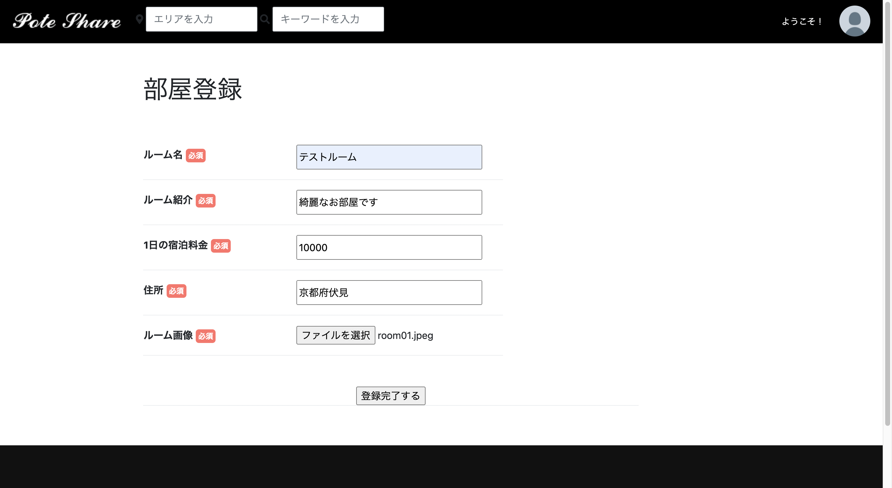
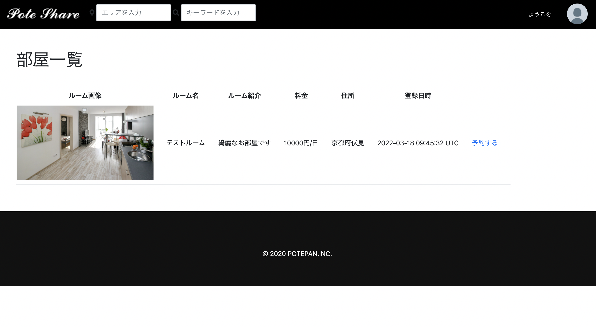
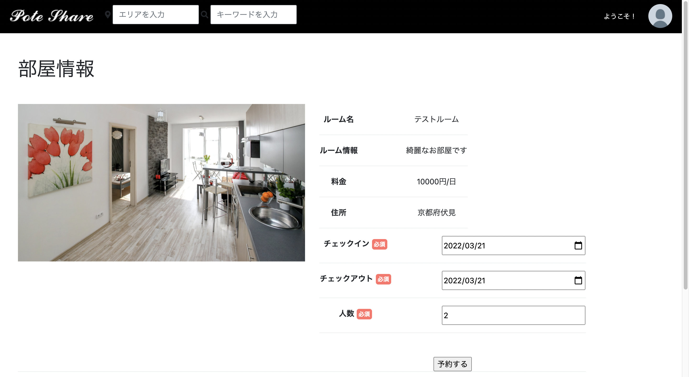
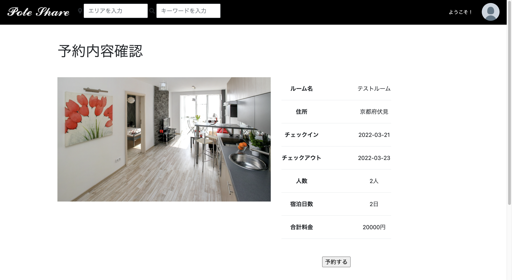
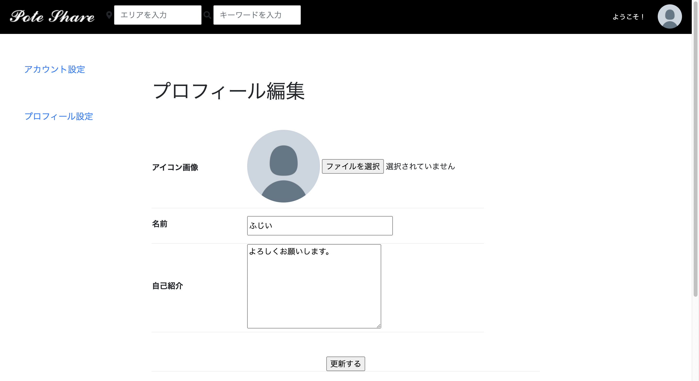
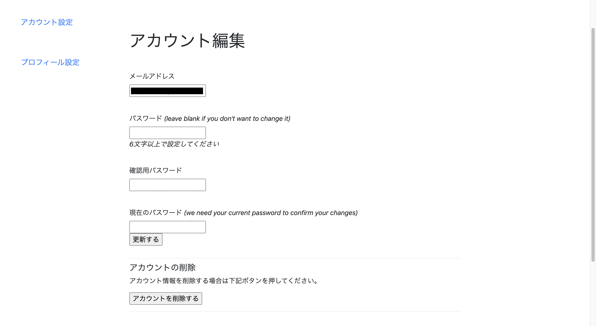

WELCOME
ご覧いただきありがとうございます。
プログラミング学習の成果物、自身の経歴やスキルをまとめています。
WORKS
制作物

タスク管理アプリ
Ruby/Ruby on Rails

Ruby on Rails 宿泊予約アプリ
使用言語：Ruby on Rails/HTML/CSS/JavaScript/MySQL/AWS
- スクールの課題でCRUD機能に複数モデルのリレーションを取り入れたサイトを作成しました。
- 部屋情報の登録、部屋の予約、エリア別とフリーワードでの検索、ユーザープロフィールの登録などができます。
- 作成に一番時間がかかった課題です。エラー耐性が身につき、対処法なども身につきました。
トップページ：エリア、フリーワードでの部屋の検索、人気エリアは画像をクリックして検索ができます。
部屋情報登録：必須項目を全て入力すると登録ができます。
登録が完了すると一覧に表示されます。
部屋の予約画面です。
宿泊日数に合わせて料金を計算します。（料金は発生しません）
ユーザーのプロフィール情報の登録が可能です。
メールアドレスなどはアカウント情報から編集可能です。
宿泊予約アプリ
Ruby/Ruby on Rails


レシピ投稿アプリ
PHP/Laravel

プロフィールサイト
HTML/CSS/JavaScript

福井県内の猫スポットを紹介するサイト
ふくいねこめぐり
使用言語：HTML/CSS/VScode
デプロイ先：Heroku
レスポンシブ対応：◯
- 県内外の人に向け、地元福井の魅力を発見、再発見してもらえるようなサイトを何か作りたいと思い、作成しました。
- 県内の愛猫家や猫好き、観光客などに向けての使用を想定しています。
- 今後PHPで掲示板機能などを追加し、情報共有サイトとして利用できる様に進めていきたいと考えています。
オリジナルサイト
HTML/CSS
SKILL
プログラミングスキル
HTML/CSS
レスポンシブ含め基本的なコーディングが可能です。シンプルで見やすく、使いやすいユーザー目線でのサイト作りを意識しています。
JavaScript
Webページで使用される基本的なコーディングが可能です。
Ruby
複数リレーションを要するWEBアプリの作成が可能です。フレームワークはRuby on Railsを使用しています。
PHP
現在学習中、簡単なアプリの作成が可能です。フレームワークLaravelを使用しています。
使用ツール
・コード公開：GitHub
・開発：VScode/AWS EC2/MAMP
・DB：MySQL
・デプロイ：Heroku/Netlify
デザインとコード
ユーザー目線で見やすく、分かりやすいデザインを意識しています。
チームメンバーが見やすいコード、分かりやすいクラス名などを意識したコーディングを行なっています。
ABOUT ME
福井県出身、県内の大学で栄養学を学び、資格を活かせる仕事としてドラッグストアに就職しました。
薬局の医療事務と医薬品販売員として約３年間勤め、2021年に退職。
プログラミングの仕事に魅力を感じ、独学とスクールを利用して学習に励んでいます。
Webサービスの制作に興味があり、主にRubyやPHPを学んでいます。
強みとビジョン
強み
前職では医薬品販売時に、お客様に寄り添った接客を意識して、お客様の悩みを聞き出し、適切なアドバイスができるように努めました。
また、お客様に合わせて伝わりやすい言葉選びなども工夫するようにしていました。
離職期間は、独学とオンラインスクールを利用して、プログラミングの学習を進めてきました。
常にアップデートを続けるプログラミングの知識に対しても、学び続ける姿勢で仕事に励んでいきます。
前職では、店舗で1つのチームとして仕事を進めていたので、積極的にコミュニケーションをとりながら、連携をとるように意識していました。
ビジョン
実務未経験ではありますが、できそうな仕事は積極的に取り組み、経験を積んでいきたいです。
未経験の業務なども積極的に挑戦していきたいと考えています。
ユーザーの目線で客観的に、使いやすく、見やすい様なサイト作りをできるようになりたいと考えています。
個人で作成したサービスは、デザインを意識しながらも、トップページで何のサイトかすぐに分かるようなサイトであるか、伝えたい情報を伝えられるかを意識しながら作成しました。
前職では小規模ではありますが、マネジメントの経験があります。
その経験を活かし、プログラミングの技術を磨き、３〜5年後には、開発チームのリーダーを目指したい考えています。
この仕事への思い
前職での経験を通し、以前から興味のあったもの作りの仕事をしたいと思い、プログラマーを目指しています。
自分のアイデアを形にできること、最新の技術を学ぶ中で自分自身も成長を続けられることに魅力と面白さを感じています。
エラーに躓く時もありますが、自分の組んだプログラムが動いたときや、思い通りのサイトを作れた時は達成感があります。
時間を忘れて制作に夢中になる時もあり、この仕事をやりたいという気持ちがますます強くなりました。
未経験の職種への転職ではありますが、前職での経験や、自身で学習したことを活かせるよう努力していきいと考えています。